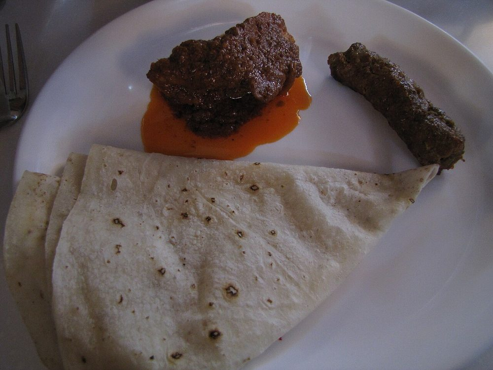

Ghar Da Chicken Curry
the plain everyday punjabi chicken curry, onion-heavy and thin enough to eat with roti

Contains: milk, mustard
Checked against the ingredient list for ten allergens: milk, egg, fish, crustaceans, tree nuts, peanuts, sesame, mustard, soy and gluten. Brands vary, so read the label on anything new to you.
Ingredients
Quantities for 4.
- 800g, bone-in, cut into curry pieces Chickenbone-in is what gives the gravy body
- 4 medium, finely sliced Onion
- 3 medium, pureed Tomato
- 100g, whisked Yogurt
- 4cm, paste Ginger
- 10 cloves, paste Garlic
- 3, slit Green Chilli
- 4 tbsp Mustard Oilor ghee
- 1 tsp Cumin Seeds
- 2 Bay Leaf
- 1 Black Cardamom
- 1 stick, 3cm Cinnamon
- 4 Cloves
- 3/4 tsp Turmeric
- 2 tsp Kashmiri Chillifor colour without heat
- 2 tsp Coriander Powder
- 1 tsp Cumin Powder
- 1 tsp Garam Masala
- 1 tbsp Kasuri Methioptional
- 3 tbsp, chopped Coriander Leavesoptional
- to taste Salt
- 500ml, hot Water
Cookware
kadhai, stovetop
Before you start
- Marinate the chicken in the yogurt, half the ginger-garlic paste, the turmeric and 1 tsp salt for 30 minutes in the refrigerator.
- Heat mustard oil until it stops smoking before you cook in it, otherwise the curry tastes raw and bitter.
- Slice the onions thin and uniform. They are the body of this gravy. There is no cream or cashew here.
Method
- Heat the mustard oil in a kadhai until it smokes, then take it off the flame for 30 seconds to settle.Raw mustard oil is pungent and sharp. Smoking it once fixes that permanently.
- Return to medium heat, crackle the cumin, then add the bay, black cardamom, cinnamon and cloves for 20 seconds.
- Add the sliced onion and a pinch of salt and fry 15-18 minutes to a deep brown, stirring every minute or so.This is the longest step and the one people cut short. Go until the onion is jammy and genuinely brown, not gold.
- Add the remaining ginger-garlic paste and the green chillies and fry 2 minutes.
- Add the kashmiri chilli, coriander and cumin powders with 2 tbsp water and cook 1 minute so they do not scorch.
- Add the tomato puree and cook 10 minutes on medium, until the mixture pulls together into a mass and oil rims the edge.
- Add the marinated chicken with all its yogurt and fry on high for 6-7 minutes, until the pieces are sealed and coated and the yogurt has tightened.Keep stirring while the yogurt goes in or it will split into curds.
- Pour in 500ml hot water, bring to a boil, then cover and simmer on low for 20 minutes.
- Uncover and simmer 6-8 minutes more until the gravy coats a spoon thinly and the chicken pulls from the bone.
- Crush in the kasuri methi, add the garam masala, cover and rest 5 minutes. Finish with coriander leaves and serve with roti.
Storage
Keeps 3 days refrigerated; the gravy thickens overnight, so loosen with hot water when reheating. Freezes 2 months, though the chicken softens.
Nutrition Medium estimate
High protein: 48+ g a serving, 40% of the calories
| Per serving472 g | Per 100 g | |
|---|---|---|
| Calories | 481+ kcal | 102+ kcal |
| Protein | 48.0+ g | 10+ g |
| Carbohydrate | 22.8+ g | 5+ g |
| of which sugars | 8.8+ g | 2+ g |
| Fibre | 5.6+ g | 1+ g |
| Fat | 22.5+ g | 5+ g |
| of which saturated | 3.9+ g | 1+ g |
| of which unsaturated | 15.7+ g | 3+ g |
The + means ingredients given to taste rather than by weight are counted as zero, so the true figure is a little higher than shown. Worked out from the listed quantities. Some of the ingredient list is given to taste rather than by weight, so treat these as a guide. Ingredients given to taste rather than by weight are counted as zero, so the real figure is a little higher than this. The + says so. Some ingredients have no exact match in the nutrient database and use the nearest equivalent: garam masala. Estimated from raw ingredients using USDA FoodData Central. Cooking changes are not modelled, and added salt is excluded, so sodium is not given.
Written and checked against sources, not cooked in a test kitchen. Times, yields, allergens and nutrition are worked out rather than measured, so use your own judgement on doneness and on storing. More in About.